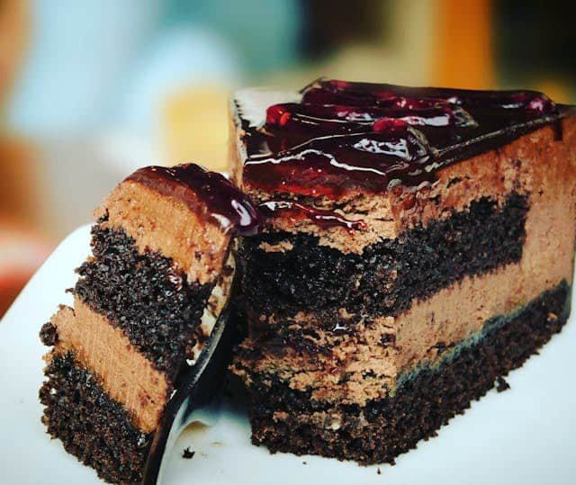

Die 3 grössten Foto-Fehler auf Tinder (und warum du deshalb keine Matches bekommst) von Tinder Foto | Mar. 24, 2026 Kennst du das? Du swipst dir abends auf der Couch die Finger wund, überlegst dir kreative Anschreiben, aber am Ende des Tages bleibt der Bildschirm leer. Keine Matches. Keine Dates.
5 häufige Fehler in Männerprofilen auf Tinder – und wie dein Foto das entscheidet von Tinder Foto | Juli 1, 2025
Tipps für Singles über 40 in der Schweiz: Neustart mit Stil, Herz und Verstand von Tinder Foto | Juni 10, 2025
 Liebe geht durch den Magen – Aphrodisierende Lebensmittel von Tinder Foto | Jan. 24, 2025